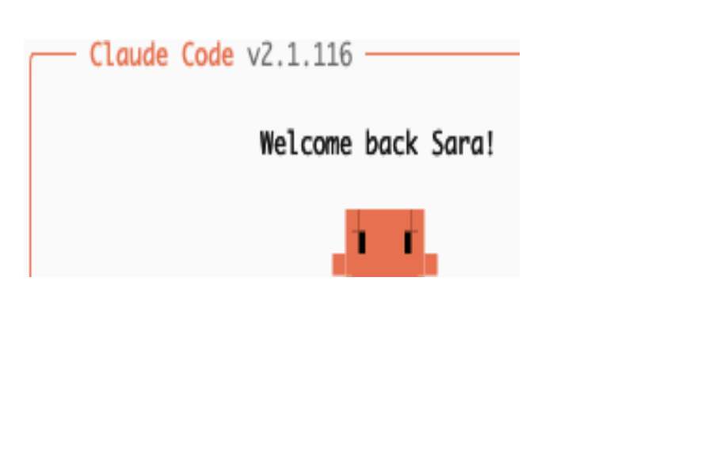
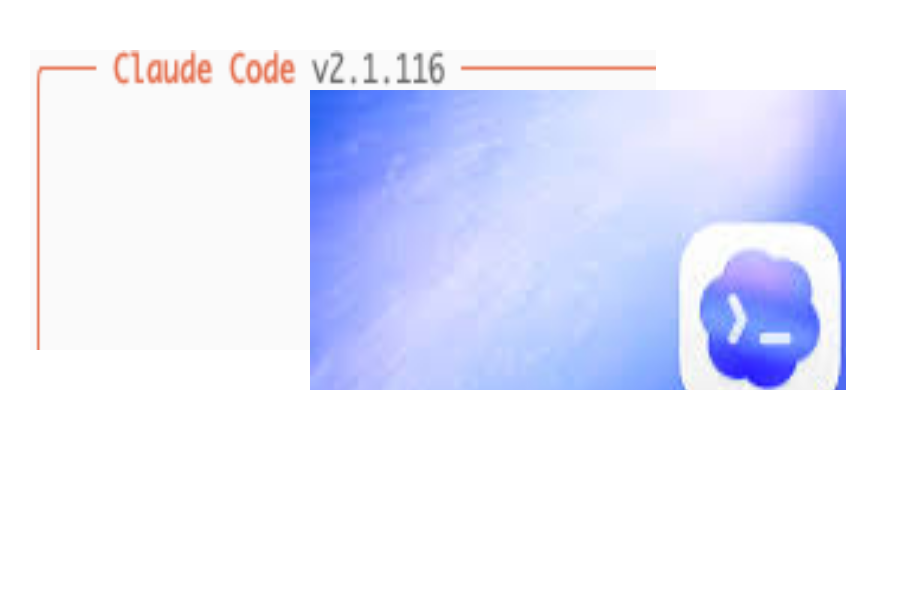
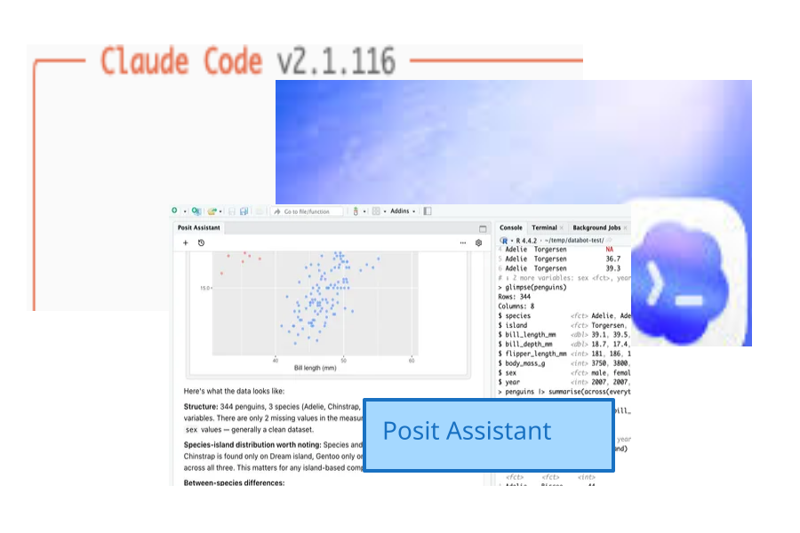

LLMs for Data Analysis in R



Coding / data analysis agent in RStudio and Positron
Works with R and Python
Access to your R/Python session
Successor to Databot
AGENTS.mdMarkdown file that stores persistent context about your project
Loaded automatically at the start of every conversation
Include info like project structure, coding conventions, preferred libraries, etc.
Specialized knowledge modules that load automatically when relevant
Built-in skills include shiny-bslib, quarto-authoring, and more
Create your own: project-level (.positai/skills/) or user-level (~/.positai/skills/)
Open _exercises/08_posit-assistant/08_posit-assistant-app.R and run it to confirm it works.
Open Posit Assistant (sidebar or Cmd+Shift+P > “Assistant”).
Ask it to help you extend the app (for example, add a plot).
Run the app and continue iterating.
06:00